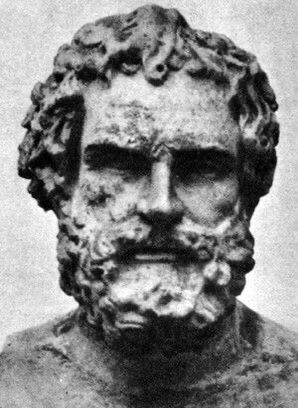

Who Was Anaximenes of Miletus?
Anaximenes of Miletus was a Greek philosopher of the sixth century BCE and the third major figure traditionally associated with the Milesian school of Pre-Socratic philosophy. He followed Thales and Anaximander in attempting to explain the natural world by identifying a single underlying principle from which the diversity of things could arise. :contentReference[oaicite:0]{index=0}
Anaximenes is best known for identifying air (aēr) as the fundamental principle underlying the world. Unlike Anaximander, whose ultimate principle was described as indeterminate or unlimited, Anaximenes proposed a definite physical principle that nevertheless possessed an unlimited character and was capable of generating the changing forms of the natural world. :contentReference[oaicite:1]{index=1}
His most influential idea was the explanation of change through rarefaction and condensation. According to the ancient tradition, air becomes fire when rarefied, while increasing condensation produces progressively denser forms such as wind, cloud, water, earth, and stones. This allowed Anaximenes to explain the apparent diversity of nature as transformations of a single underlying reality. :contentReference[oaicite:2]{index=2}
Anaximenes also connected air with life and the structure of the cosmos. A surviving fragment traditionally attributed to him compares the human soul, understood as air or breath, with the air that encompasses and sustains the world. Although much of his philosophy survives only through later reports and its precise interpretation remains debated, his attempt to explain nature through material processes made him an important figure in the development of early Greek natural philosophy. :contentReference[oaicite:3]{index=3}
Anaximenes of Miletus: Quick Facts
- Name — Anaximenes of Miletus
- Era — Sixth century BCE
- From — Miletus, Ionia
- Philosophical tradition — Pre-Socratic and Milesian philosophy
- Known for — Natural philosophy, cosmology, and the theory of air
- Fundamental principle — Air
- Key processes — Condensation and rarefaction
- Associated thinkers — Thales and Anaximander
- Surviving writings — Only fragments and ancient testimonia survive
- Historical importance — A major figure in the early Milesian tradition of Greek natural philosophy
Anaximenes and the Milesian School

Anaximenes was associated with Miletus, an important Ionian city on the western coast of Asia Minor, in what is now Turkey. During the sixth century BCE, Miletus became closely associated with some of the earliest Greek thinkers whose surviving traditions sought to explain the natural world through its own principles and processes rather than relying exclusively on traditional mythological accounts.
The Milesian tradition is commonly represented by Thales, Anaximander, and Anaximenes. Ancient sources and later philosophical histories connect these thinkers because all three investigated the origin and structure of the cosmos and asked what fundamental principle could account for the natural world and the many forms found within it.
Their relationship should nevertheless be understood with some caution. The ancient tradition sometimes presents them as belonging to a direct succession of teachers and pupils, but modern scholarship cannot establish every detail of these personal relationships with certainty. What is clearer is the substantial continuity between their philosophical questions and their attempts to explain nature.
Anaximenes developed this project differently from his predecessors. Rather than identifying water, as Thales was traditionally said to have done, or the apeiron, the boundless or indefinite principle associated with Anaximander, Anaximenes identified air as the originating principle from which the different forms of the natural world arise.
His position therefore represents both continuity and innovation within early Greek philosophy. Like the other Milesians, Anaximenes sought a unified explanation of nature, but he also provided a more explicit account of the processes through which one originating principle could give rise to a diversity of natural phenomena.
Why Is Anaximenes Important in Philosophy?
Anaximenes is important because he attempted to explain both unity and change in nature. His theory begins with a single originating principle, air, while also proposing processes through which different forms of matter and natural phenomena can arise. This combination addresses one of the central problems of early Greek philosophy.
His philosophy is therefore significant in the history of Pre-Socratic natural philosophy. The question was not simply what fundamental reality exists, but how such a reality could account for the immense variety of things observed in the world. Anaximenes attempted to connect a principle of origin with an account of natural transformation.
The theory of condensation and rarefaction is especially important in this respect. Instead of merely stating that everything comes from one source, Anaximenes described changes in the condition of air as the mechanism through which different natural forms could emerge. Ancient reports describe this as a central feature of his explanation of physical change.
His philosophy also illustrates an important development in the history of explanation. The Milesians were concerned with identifying principles and causes of natural phenomena, and Anaximenes attempted to describe regular processes rather than explaining each phenomenon separately through an independent story or divine intervention.
His theory therefore connects two major philosophical problems: what is reality fundamentally made of? and how does change occur? These questions remained central to later Greek philosophy, even though later thinkers criticized, transformed, or rejected the particular answers offered by Anaximenes.
What Did Anaximenes Believe?
Anaximenes is traditionally associated with the view that air is the fundamental originating principle of nature. Ancient sources describe this air as unlimited or infinite and as the source from which the things in the world arise. Air was therefore not merely one ordinary object among others but occupied a fundamental place in his account of the cosmos.
Ancient testimony also describes air as capable of becoming different forms of matter through condensation and rarefaction. In this account, changes in the density or condition of air produce different natural substances. The diversity of the visible world could thus be explained through transformations connected with a single originating principle.
Rarefied air becomes associated with fire, while increasingly condensed air gives rise successively to wind, clouds, water, earth, and stones. Ancient writers also connect rarefaction with heating and condensation with cooling, showing that Anaximenes' account attempted to relate physical transformation to observable differences in the natural world.
Anaximenes also appears to have connected air with life and the structure of the cosmos. A fragment traditionally attributed to him compares the human soul, understood as air or breath, with the air that encompasses and holds together the world. This suggests a close relationship in his thought between air, life, motion, and cosmic order.
The surviving evidence is indirect, however. Only a very small amount of material can be attributed directly to Anaximenes, while much of what is known about his philosophy comes through later writers such as Aristotle, Theophrastus, and subsequent doxographical traditions. His philosophy must therefore be reconstructed cautiously rather than treated as a complete system preserved in his own words.
Why Did Anaximenes Believe Air Was the Fundamental Principle?
The choice of air allowed Anaximenes to propose a principle that was both fundamental and capable of undergoing different forms of change. Air could appear invisible when evenly distributed, yet it was also experienced directly through breath, wind, movement, and atmospheric phenomena. This made it a plausible candidate for an underlying reality that was both pervasive and dynamic.
Ancient testimony suggests that air occupied an intermediate position between being entirely without qualities and being merely one limited object among many. Later accounts of Anaximenes describe air as capable of taking on different conditions and producing the diversity of nature through changes of rarity and density.
Air was also closely connected in ancient Greek thought with breath and life. The surviving fragment traditionally attributed to Anaximenes compares the soul, itself understood as air, with the breath and air that encompass the whole cosmos. This analogy suggests that his choice of air may have involved more than a simple observation about ordinary atmospheric matter.
Anaximenes further appears to have regarded air as continually in motion, and motion was essential to his explanation of change. If the originating principle can transform itself into different natural forms, then the processes producing those transformations must also belong to the regular activity of nature rather than occur only through an external intervention.
The precise reasoning behind his choice cannot be reconstructed with complete certainty because no complete work by Anaximenes survives. Nevertheless, the ancient tradition consistently presents air and its transformations as central to his philosophy, making them the key to understanding his attempt to explain the origin and diversity of the natural world.
What Is Anaximenes' Theory of Condensation and Rarefaction?
The most distinctive feature of Anaximenes' philosophy is his attempt to explain changes in matter through condensation and rarefaction. These two opposing processes describe air becoming respectively denser or more expanded, thereby producing different forms within the natural world.
According to the ancient account, when air becomes more rarefied, it becomes associated with fire. As air becomes progressively more condensed, it becomes associated with wind, cloud, water, earth, and stone. The sequence presents the visible diversity of matter as arising through different conditions of the same originating principle.
Ancient writers also connect these processes with temperature. Rarefaction was associated with heating and condensation with cooling. A later report preserves an example involving human breath: air blown with the mouth open appears warm, whereas air forced through pursed lips appears cool. This was treated as an observation supporting the proposed contrast between rarity and density.
This gives Anaximenes a way of explaining how many different forms of matter can arise from one fundamental principle. Instead of requiring a completely different basic source for every natural object, the theory explains diversity through transformations governed by changes in the condition of the originating air.
The philosophical significance of this account lies in its attempt to provide a mechanism of change. Anaximenes did not merely identify an origin of things but connected that origin with regular processes through which natural differences could emerge. In this respect, his theory represents an important development within the Milesian search for a unified explanation of nature.
The theory should not, of course, be confused with modern physics or chemistry. Its importance belongs to the history of philosophy and early natural inquiry: it represents an early attempt to explain qualitative differences in the world through systematic transformations rather than treating each kind of thing as fundamentally unrelated to every other.
How Does Air Become Different Forms of Matter?
Anaximenes' theory can be understood as a sequence of transformations produced by different degrees of condensation and rarefaction. The ancient reports present the sequence as an ordered account of how the originating air can give rise to increasingly dense forms of matter.
- Rarefied air — associated with fire.
- Condensed air — associated with wind.
- Further condensation — associated with clouds.
- Still greater condensation — associated with water.
- Further condensation — associated with earth.
- Extreme condensation — associated with stones.
The sequence should be understood as a reconstruction based primarily on later ancient testimony rather than as a complete explanation preserved directly from a surviving work by Anaximenes. The exact meaning of the transformations, and especially the question of how closely they correspond to later ideas about matter, remains a subject requiring careful interpretation.
One traditional interpretation describes Anaximenes as holding that the underlying air persists through its transformations, so that the different substances remain forms or states of one fundamental reality. Other modern interpretations are more cautious and question whether Aristotelian ideas about an enduring underlying substance should be imposed directly upon the earlier Milesian thinkers.
Whatever interpretation is adopted, the central philosophical point remains clear: Anaximenes sought to explain diversity without beginning from an unrelated collection of fundamental substances. His theory attempts to show how a unified origin can be connected with the many distinct forms encountered in the natural world.
What Is the Archê in Anaximenes' Philosophy?
The Greek concept of archê refers broadly to a beginning, source, origin, or governing principle. In discussions of early Greek philosophy, the term is commonly used to describe the fundamental principle from which the world or its constituent things are thought to arise, although the exact vocabulary and concepts of the earliest thinkers should not always be treated as identical to later philosophical formulations.
Anaximenes is traditionally associated with identifying air as the archê. Air was the originating principle from which the different forms of the natural world developed. His position therefore continues the Milesian search for a unified source while differing from the answers traditionally attributed to Thales and Anaximander.
What makes Anaximenes particularly significant is that his theory connects the originating principle with a proposed mechanism of change. Air does not simply stand at the beginning of the cosmos as a passive source; through rarefaction and condensation, it is associated with the processes through which different natural forms emerge.
This connection between origin and transformation gives his philosophy an important place in the development of early Greek natural thought. The question is not only what comes first, but how an originating principle can account for the continuing production, alteration, and diversity of the world experienced by human beings.
Modern interpretations should nevertheless remain cautious about describing Anaximenes in terms drawn directly from later metaphysical theories. The surviving evidence is fragmentary, and the concept of a permanent material substratum may reflect later philosophical frameworks more than Anaximenes' own precise understanding. What can be stated with confidence is that air stands at the center of the ancient reconstruction of his philosophy.
Anaximenes' Cosmology and View of the Universe
Anaximenes also developed ideas about the origin and structure of the cosmos. Ancient reports associate him with a cosmology in which the Earth, heavenly bodies, and atmospheric phenomena were explained through natural processes connected with his fundamental principle, air, and its capacity for transformation.
According to the surviving testimonia, the formation of the cosmos began through transformations of air. The Earth was said to have been among the earliest products of the condensation or "felting" of air, while moisture rising from the Earth was associated with the formation of fiery celestial bodies. The precise reconstruction of this process, however, depends on later reports.
Ancient testimony describes the Earth as broad and flat, supported or carried by air. The heavenly bodies were likewise explained within a natural framework: several reports describe them as fiery bodies whose movement and position were connected with the action or support of air rather than with purely mythological narratives.
Some ancient accounts further state that the Sun, Moon, and other heavenly bodies did not pass beneath the Earth at night but moved around it and became hidden from view by the higher parts of the Earth. Other reports describe the heavens as surrounding the Earth in a manner compared with a cap or covering.
These cosmological details should be treated with caution. The reports were written centuries after Anaximenes and sometimes differ in their descriptions. Nevertheless, they show that his philosophical project extended beyond the question of the fundamental substance to include the Earth, the heavens, meteorological phenomena, and the structure of the visible cosmos.
What Did Anaximenes Think About the Earth?
Ancient reports consistently attribute a flat Earth to Anaximenes. The Earth is described as broad and flat, and some testimonia compare its shape to a table or disk. According to these reports, its flatness was closely connected with the explanation of how it remained supported within the surrounding air.
One important ancient account states that the Earth rides or floats upon air because of its flat shape. Aristotle preserves a related explanation according to which a flat body resists cutting through the air beneath it, allowing the air below to support it. This illustrates the attempt to explain the Earth's stability through physical conditions rather than through a supernatural support.
In Anaximenes' cosmology, the Earth was therefore not imagined as suspended from an external pillar or carried by a mythological being. Its position was explained as part of the broader behavior of air and physical bodies. Although the theory is scientifically incorrect by modern standards, it represents an early attempt at a natural account of a fundamental cosmological problem.
This cosmological model should not be judged as though it were a modern scientific explanation. Its historical importance lies in the effort to provide reasons for the shape, origin, and stability of the Earth by appealing to principles thought to operate within nature itself.
The reports concerning the exact shape and support of the Earth are ancient testimonia rather than surviving passages from a complete work by Anaximenes. Modern reconstructions must therefore distinguish between ideas strongly supported by multiple ancient sources and the more detailed interpretations developed by later commentators.
Anaximenes on Air, Breath, and the Soul
Anaximenes is also associated with a famous comparison between air, breath, and the soul. A surviving fragment attributed to him states, in essence, that just as the human soul, being air, holds a person together, so breath and air encompass or sustain the whole cosmos. This is among the most important pieces of evidence connected with his philosophy.
The comparison links air with life and animation. Air was not simply an inert material substance in the ordinary modern sense; it was connected with breath, and breath was closely associated in ancient Greek thought with life and the activity of living beings. This helps explain why air could serve as a cosmological principle.
The fragment also establishes an analogy between the microcosm and the macrocosm: the individual human being and the larger universe are explained through a related principle. As air is associated with the cohesion or life of the individual, breath and air are associated with the encompassing order of the world.
Some modern interpretations therefore suggest that Anaximenes may have conceived the cosmos as possessing a form of life or animation, with air performing a role analogous to that of a soul. This interpretation is plausible but should not be stated as though a complete doctrine of a world-soul survived directly in Anaximenes' own writings.
The exact philosophical implications remain uncertain because the surviving evidence is extremely limited. What can be stated more confidently is that the ancient tradition connects air with both the human soul and the encompassing cosmos, making the relationship between matter, breath, life, and cosmic order an important feature of the reconstruction of Anaximenes' thought.
Anaximenes and Early Greek Natural Philosophy
Anaximenes belongs to the tradition now called natural philosophy, the ancient investigation of nature, matter, change, life, and the structure of the cosmos. Although the expression is modern in its broad classificatory use, it is useful for describing the central concerns of the early Greek thinkers associated with Miletus.
The Milesian philosophers are historically significant because they sought explanations of natural phenomena through principles and processes operating within the natural world. Their theories differed profoundly from modern science, but they raised questions about regularity, material transformation, causation, and cosmic structure that became fundamental to later philosophical inquiry.
Anaximenes' theory is particularly important because it combines a material principle with an explicit account of transformation. Air is not merely named as the origin of things; its changing conditions are used to explain how different forms of matter and natural phenomena can arise from a common source.
His explanations also extended beyond the basic constitution of matter. Ancient reports connect him with theories concerning the formation of the Earth and heavenly bodies, as well as clouds, wind, rainbows, thunder, lightning, and other observable phenomena. His philosophical project was therefore broadly concerned with explaining the natural order of the cosmos.
The importance of this approach lies less in the scientific accuracy of its particular conclusions than in its explanatory ambition. Anaximenes attempted to show that apparently different phenomena could be investigated through connected principles, transformations, and regular processes rather than being treated as entirely separate and unrelated events.
Anaximenes' Main Philosophical Ideas
Although the evidence for Anaximenes is fragmentary, several ideas are consistently associated with his place in the history of Pre-Socratic philosophy. Together, these ideas show his attempt to explain the origin, diversity, transformation, and larger structure of the natural world through a unified philosophical account.
Air as the Fundamental Principle
Anaximenes is traditionally associated with the claim that air is the fundamental originating principle of nature. Ancient reports describe it as the source from which existing things arise and emphasize its unlimited extent, perpetual motion, and capacity for transformation into the different forms of the visible world.
Condensation and Rarefaction
Changes in the rarity and density of air were used to explain the emergence of different forms of matter. Rarefied air becomes associated with fire, while increasing condensation produces wind, cloud, water, earth, and stone, providing a process through which diversity can arise from one originating principle.
Natural Explanation
His philosophy sought to explain the cosmos through processes occurring within nature rather than relying solely on traditional mythological narratives. Air, motion, condensation, and rarefaction were used as explanatory principles in accounts of matter, atmospheric phenomena, and the structure of the cosmos.
Unity Beneath Diversity
The theory attempts to explain the diversity of the physical world through a single fundamental principle. Instead of assuming that every kind of thing requires an entirely independent origin, Anaximenes sought to show how different natural forms could be connected through transformations of one underlying reality.
Cosmological Inquiry
Anaximenes also developed ideas about the Earth, heavens, and celestial bodies as part of his broader investigation of nature. Although many details are preserved only in later testimonia, the surviving tradition makes clear that his philosophical interests extended from the fundamental principle of matter to the structure and behavior of the wider cosmos.
Did Anaximenes Write Any Books?
Ancient and modern scholarly traditions indicate that Anaximenes wrote a work concerning nature, probably in prose, but no complete book survives today. Only a very small amount of wording is preserved through quotation or attribution in later ancient sources, making direct access to his original thought extremely limited.
This places Anaximenes among the many Pre-Socratic philosophers whose works have been lost and whose ideas must be reconstructed from fragments and testimonia. Later authors sometimes quoted earlier thinkers directly, but they also summarized, criticized, and interpreted their views according to philosophical concerns of their own periods.
Our knowledge of his philosophy therefore comes primarily through later ancient authors and traditions, including material ultimately associated with Theophrastus, Aristotle's successor in the Peripatetic school. Theophrastus' historical discussions of earlier natural philosophers became especially important for the later preservation of Milesian doctrines.
The existence of only a small number of surviving words makes it impossible to reconstruct the complete organization, arguments, or terminology of Anaximenes' original work with certainty. Statements about his philosophy should therefore distinguish between direct fragments, relatively early reports, and interpretations developed by much later commentators.
This means that studying Anaximenes requires careful historical method. The absence of a surviving complete text does not mean that nothing can be known about his ideas, but it does mean that the surviving evidence must be evaluated according to its source, date, purpose, and relationship to the philosophical tradition it describes.
How Do We Know About Anaximenes?
The evidence for Anaximenes is fragmentary. Like many Pre-Socratic philosophers, he is known mainly through later ancient authors who preserved quotations, summaries, criticisms, and reports about earlier thinkers. Modern knowledge of his philosophy is therefore based on the careful comparison and interpretation of these different sources.
Aristotle and Later Peripatetic Tradition
Aristotle and the later philosophical tradition surrounding him are important for the reconstruction of early Greek natural philosophy. Aristotle discussed the theories of his predecessors, while Theophrastus, Aristotle's successor, produced more systematic historical accounts of earlier thinkers. Reports deriving from this tradition associate Anaximenes with air and with condensation and rarefaction.
Simplicius
Simplicius, a sixth-century CE commentator on Aristotle, preserved important material from earlier philosophical writings that are no longer extant. In discussing Aristotle and the history of natural philosophy, he transmitted reports connected with Theophrastus and other earlier sources, making his commentaries important evidence for reconstructing the Milesian thinkers.
Ancient Testimonia
Other ancient authors, including writers such as Hippolytus, Aetius and Plutarch, also preserve information associated with Anaximenes. These reports vary in date, reliability, and purpose, and some may depend upon earlier sources that no longer survive. Historians must therefore compare them rather than treating every testimony as equally direct evidence.
Because Anaximenes' complete writings have not survived, historians distinguish between fragments, which preserve words attributed directly to an author, and testimonia, which report or describe an author's views. This distinction is essential for understanding both what can reasonably be attributed to Anaximenes and where substantial uncertainty remains.
What Do We Actually Know About Anaximenes?
Anaximenes illustrates the difficulties involved in reconstructing Pre-Socratic philosophy. His ideas are historically important, but the surviving evidence is incomplete and comes largely through later writers. Different claims about his philosophy therefore have different degrees of historical certainty.
Strongly Associated with Anaximenes
- Anaximenes was associated with Miletus and the Milesian tradition.
- He is traditionally associated with air as the fundamental principle of nature.
- Condensation and rarefaction are central to the ancient account of his theory.
- He developed a natural-philosophical account of the cosmos.
Traditionally Attributed
- Specific details about the structure of the Earth.
- Particular explanations of celestial bodies.
- Detailed cosmological mechanisms beyond the surviving evidence.
Uncertain or Disputed
- The precise meaning Anaximenes gave to air as the fundamental principle.
- The exact details of his cosmological system.
- The complete philosophical argument behind condensation and rarefaction.
- The extent to which later interpretations accurately reconstruct his original views.
Anaximenes and the Milesian School
Anaximenes is traditionally regarded as the third major figure of the Milesian school, following Thales and Anaximander. The three thinkers are associated with the early Greek investigation of nature and with the search for an originating principle capable of explaining the diversity and structure of the cosmos.
- Thales — traditionally associated with water as the fundamental principle.
- Anaximander — associated with the apeiron, the boundless or indefinite.
- Anaximenes — associated with air and the processes of condensation and rarefaction.
Their different theories demonstrate how early Greek philosophy developed through attempts to answer similar questions with different explanations of nature and reality. Each thinker sought some account of what is fundamental, but the answers attributed to them differed significantly in their understanding of the origin and constitution of the natural world.
Anaximenes represents both continuity and change within this tradition. Like Thales and Anaximander, he sought a unified explanation of the cosmos, but his theory combined a concrete material principle with an explicit process of transformation. This gave him a distinctive place in the development of Milesian natural philosophy.
Anaximenes Compared With Thales and Anaximander
Anaximenes' theory becomes clearer when considered alongside the two earlier Milesian philosophers. All three are traditionally connected with the question of what lies at the origin of the natural world, but their answers represent importantly different approaches to the problem of unity, diversity, and cosmic change.
Thales
Thales is traditionally associated with water as the fundamental principle of nature. Because the evidence for Thales is also extremely limited, the precise meaning and scope of this doctrine remain uncertain. Nevertheless, the later tradition consistently presents water as central to his place in the Milesian search for an originating principle.
Anaximander
Anaximander is associated with the apeiron, often translated as the boundless, indefinite, or unlimited. Unlike a familiar material element such as water or air, the apeiron was understood as an indefinite originating principle capable of giving rise to the different constituents and oppositions of the cosmos.
Anaximenes
Anaximenes returned to a more concrete material principle, air, while also proposing condensation and rarefaction as processes through which different forms arise. His theory therefore retained the search for unity while giving particular importance to the mechanism by which natural transformation occurs.
In this sense, Anaximenes continued the Milesian search for an originating principle while attempting to give a more explicit account of how transformation occurs. The comparison also illustrates a major feature of early Greek philosophy: later thinkers often developed their ideas by modifying, rejecting, or reformulating problems already raised by earlier attempts to understand nature.
Anaximenes' Influence on Greek Philosophy
Anaximenes contributed to the continuing Pre-Socratic investigation of nature, matter, change, and the cosmos. His theory provided an influential example of how many apparently different forms of matter might be explained through transformations of a single underlying principle.
His account of condensation and rarefaction was especially significant because it attempted to explain how change happens, not merely what the world is ultimately made from. Later Greek philosophers continued to confront this problem in different ways as they developed theories of substance, elements, motion, and transformation.
The influence of Anaximenes can also be seen in the continuing importance of air as a philosophical and cosmological principle. Diogenes of Apollonia, for example, later developed a theory in which air again played a central role, although his philosophical system should not simply be treated as a direct repetition of Anaximenes' views.
More broadly, the philosophical problem addressed by Anaximenes would continue throughout ancient Greek thought: how can a changing and diverse world be explained in terms of something fundamental? Different philosophers proposed radically different answers, including theories based on multiple elements, atoms, mathematical structures, or intelligible forms.
His lasting importance therefore lies not only in the particular claim that air is fundamental, but in the attempt to connect a theory of ultimate reality with a systematic explanation of natural change. The Milesian tradition helped establish the philosophical importance of asking how the structure and transformations of nature can be understood through reasoned inquiry.
Anaximenes of Miletus Explained Simply
Anaximenes was a Pre-Socratic Greek philosopher who wanted to explain what the natural world is fundamentally made of and how many different things can arise from one underlying principle. He belonged to the Milesian tradition alongside the earlier thinkers Thales and Anaximander.
His answer was traditionally identified as air. He believed, according to the surviving ancient tradition, that changes in air could produce different forms of matter through condensation and rarefaction. In this way, one fundamental principle could account for the diversity of nature.
His theory also extended to questions about the Earth, the heavens, weather, and the relationship between air and life. Although many of his cosmological ideas are known only through later reports, they show that his philosophy was an attempt to explain the natural world as a connected and intelligible whole.
- Question: What is the fundamental principle of nature?
- Answer associated with Anaximenes: Air.
- Process of change: Condensation and rarefaction.
- Tradition: Milesian and Pre-Socratic philosophy.
- Other interests: Cosmology, nature, the Earth, celestial bodies, and the relationship between air and life.
A Famous Fragment Associated with Anaximenes
“Just as our soul, being air, holds us together, so breath and air encompass the whole world.”
Frequently Asked Questions About Anaximenes of Miletus
Who was Anaximenes of Miletus?
Anaximenes of Miletus was a sixth-century BCE Greek philosopher associated with the Milesian school and the early development of Pre-Socratic natural philosophy.
What is Anaximenes famous for?
Anaximenes is best known for the philosophical theory that air is the fundamental principle of nature and for explaining natural transformation through condensation and rarefaction.
What did Anaximenes believe?
Anaximenes is traditionally reported to have regarded air as the fundamental originating principle from which different forms of matter arise through processes of condensation and rarefaction.
Why did Anaximenes believe air was the fundamental principle?
The exact reasoning is uncertain because his complete writings do not survive. Ancient testimony suggests that air was regarded as a suitable originating principle because it could undergo different forms of transformation.
What is Anaximenes' theory of air?
Anaximenes' theory identifies air as the fundamental principle of nature and associates different forms of matter with different degrees of condensation and rarefaction.
What are condensation and rarefaction in Anaximenes' philosophy?
Condensation and rarefaction are processes through which air becomes denser or more rarefied. Ancient reports associate increasingly condensed air with wind, clouds, water, earth, and stones, while increasingly rarefied air is associated with fire.
What is the archê according to Anaximenes?
The archê is a beginning, origin, source, or fundamental principle. Anaximenes is traditionally associated with identifying air as the archê of nature.
Was Anaximenes a Pre-Socratic philosopher?
Yes. Anaximenes is traditionally classified as a Pre-Socratic philosopher and is one of the major figures associated with the Milesian school.
Who were the Milesian philosophers?
The Milesian tradition is commonly associated with Thales, Anaximander, and Anaximenes. They investigated nature and sought fundamental principles that could explain the cosmos.
What did Anaximenes think the universe was made of?
Anaximenes is traditionally associated with the view that air was the fundamental originating substance from which different forms of matter emerged through condensation and rarefaction.
Did Anaximenes believe the Earth was flat?
Ancient reports attribute a flat Earth to Anaximenes. However, this information comes from later testimony rather than a complete surviving work by Anaximenes.
Did Anaximenes write any books?
Anaximenes is traditionally said to have written a work on nature, but no complete work survives. His philosophy is reconstructed from fragments and later ancient reports.
How is Anaximenes different from Anaximander?
Anaximander is traditionally associated with the apeiron, while Anaximenes identified air as the fundamental principle. Anaximenes also proposed condensation and rarefaction as processes explaining transformation.
How is Anaximenes different from Thales?
Thales is traditionally associated with water as the fundamental principle, whereas Anaximenes is associated with air. Anaximenes' theory additionally emphasizes condensation and rarefaction as mechanisms of change.
Why is Anaximenes important today?
Anaximenes remains important because his philosophy represents an early attempt to explain both the fundamental nature of reality and the process of natural change through a unified principle.
Related Ancient Greek Philosophers
Anaximenes belongs to the early Greek tradition of natural philosophy. Explore the thinkers who developed different explanations of nature, reality, change, knowledge, and the cosmos.
Philosophical Traditions Connected to Anaximenes
Anaximenes is most closely connected with Milesian and Pre-Socratic natural philosophy. His theory also raises early questions that later became important in metaphysics and cosmology.
Why Anaximenes Still Matters
Anaximenes occupies an important position in the history of Greek philosophy because he continued the Milesian search for an underlying principle of nature.
His answer was air, but the philosophical importance of his theory extends beyond the choice of one substance. By connecting air with condensation and rarefaction, Anaximenes attempted to explain how a diverse and changing natural world could arise from a single fundamental principle.
His philosophy therefore represents an early attempt to address one of the enduring questions of philosophy: How can the many changing things we experience arise from something fundamental?
Explore Great Philosophers